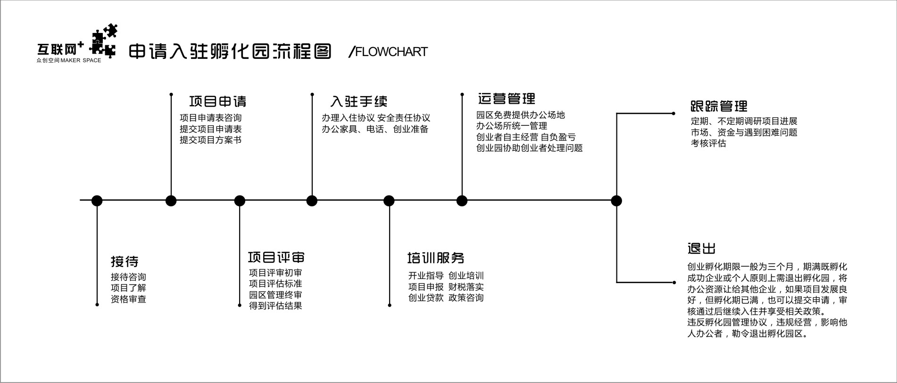

优惠政策
通知公告
园区动态
关于我们
- 通过州级众创空间认定的一次补助20万元，补助方式采取报账方式执行。 2016-11-16
- 通过州级众创空间认定的一次补助20万元，补助方式采取报账方式执行。 2016-11-16
- 通过州级众创空间认定的一次补助20万元，补助方式采取报账方式执行。 2016-11-16
- 通过州级众创空间认定的一次补助20万元，补助方式采取报账方式执行。 2016-11-16
1.基本概述
开远市“互联网+”创业孵化园，是由开远市政府主导，开远众创互联网产业园管理有限公司组建和管理的“互联网+”集群化项目。园区配套设施完备、功能齐全，设有：办公区（包括大型培训室、会议室）、电商服务商集聚区（如摄影、美工、培训、推广、代运营、网页制作等），为广大电商创业者提供完善的一站式产业链接管理服务，帮助中小网商快速成长，为电子商务进农村提供全方位支撑。2.孵化对象
①想通过淘宝、京东、微商城等第三方电商平台创业的个人或小微企业；②电子商务第三方服务商（物流、打包、拍照摄影、优化、推广、店铺装修等）；
③对互联网发展趋势有强烈认知并正在转型的传统企业；
④以及热爱互联网行业，想自己创业的其它个人或者团体。
3.入驻流程
①提交入驻申请表--②提交项目方案书--③项目评审会初审--④园区管理办公室终审--⑤学习园区规章制度--⑥办理入驻手续4.报名方式
①官网填写相关信息并预留电话，我们的工作人员会及时与您取得联系②通过联系电话:0873-7210900 或者在线 QQ 报名:1286662969
③园区现场报名 : 开远市建设东路与一行路口交汇处
④通过百度贴吧开远吧精华顶置贴：开远“互联网+”创业孵化园绿色报名通道

李赟
1983年至1985年多次参加全国“伤寒论”及疑难杂病培训学习。2002年被山西省医疗事故鉴定委员会聘任为鉴定委员。熟悉、精通中医的专业知识。擅长治疗紫癜性肾炎、慢性肾炎、风湿性关节炎、失眠症以及各种疑难性疾病。具有丰富的临床和教学工作经验。参编了《医学生辞典》、《奇方妙药治疗白癜风》专著；完成了“自拟失眠宁治疗失眠症”、“95利胆冲剂”等科研课题。曾在《中医杂志》、《北京中院学报》等刊物上发表论文20余篇。多次被评为优秀教师及先进个人。[1]-
李赟
1983年至1985年多次参加全国“伤寒论”及疑难杂病培训学习。2002年被山西省医疗事故鉴定委员会聘任为鉴定委员。熟悉、精通中医的专业知识。擅长治疗紫癜性肾炎、慢性肾炎、风湿性关节炎、失眠症以及各种疑难性疾病。具有丰富的临床和教学工作经验。参编了《医学生辞典》、《奇方妙药治疗白癜风》专著；完成了“自拟失眠宁治疗失眠症”、“95利胆冲剂”等科研课题。曾在《中医杂志》、《北京中院学报》等刊物上发表论文20余篇。多次被评为优秀教师及先进个人。[1] -
李赟
1983年至1985年多次参加全国“伤寒论”及疑难杂病培训学习。2002年被山西省医疗事故鉴定委员会聘任为鉴定委员。熟悉、精通中医的专业知识。擅长治疗紫癜性肾炎、慢性肾炎、风湿性关节炎、失眠症以及各种疑难性疾病。具有丰富的临床和教学工作经验。参编了《医学生辞典》、《奇方妙药治疗白癜风》专著；完成了“自拟失眠宁治疗失眠症”、“95利胆冲剂”等科研课题。曾在《中医杂志》、《北京中院学报》等刊物上发表论文20余篇。多次被评为优秀教师及先进个人。[1]
Heading
2017-1-16

天涯上曾经有个高楼，说的是民国时期的原配和小三，看那些早已逝去的旧人的故事，倒是颇有几分唏嘘。很多人在回帖里痛斥那些抛弃结发妻子的男人渣男，声嘶力竭，又想起被无数姑娘转发的那句话“有朝一日剑在手，斩尽天下负心狗。”不由得哑然。
我倒是觉得，感情的事，大半是由于情投意合，合则来，不合则去，人能够约束自己的是道德和责任，而非感情。从本质上来说，婚姻和爱情是背道而驰的。
而一段感情能否持久与牢固，很大程度上，是两人之间的博弈，势均力敌者方能走到最后。 势均力敌不仅仅体现在身家、背景，更体现在两人的才学、性格、能干、兴趣和喜好上。 张学良不爱更加美貌端庄的于凤至，偏偏喜欢交际花赵四，无非是因为她性格泼辣外向不拘一格，赵四更符合他的审美。
鲁迅那个偏激激进的革命斗士，自然同样无法对小脚女人朱安生出爱慕之意。
若认真评价徐志摩有关的三个女人，张幼仪其实更漂亮温柔对徐志摩的感情更深，她甚至坚韧不拔，大着肚子被徐志摩抛弃后也依旧咬着牙活得漂亮潇洒，带大了孩子，念了美国的学校，成为了女强人。但是在洋派青年徐志摩的眼中，她依旧不过是个木讷无趣的乡下妇人，他更加喜欢的是林徽因的温婉聪明才华横溢和陆小曼的妖娆娇俏眼角眉梢都是风情。